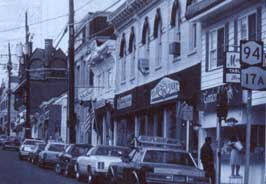

YOU'VE FOUND YOUR PERFECT PIECE OF country, you've got the financing lined up, and you're eager to close the deal. Then a nagging doubt sets in: Is this really the community you want to live in?
Your concern is well founded. After all, this may be the place where you spend the rest of your life, where you raise your kids, and make a living. Every community has its good and bad points. Your goal is to make sure the good ones outweigh the bad.
Here's my five-point plan for checking out the community you're thinking of joining:
1. Find the courthouse cafe or diner where the town's movers and shakers gather each morning before work to solve the world's-and the town's-problems. Get a copy of the local paper, turn to the real estate classifieds, and order a cup of coffee. Listen to the conversations around you; try to tap into the circuit of what's on the minds and in the hearts of people in the community.
This may seem like eavesdropping. It is. From careful listening, you'll be able to tell if the local folks are interested in vicious gossip or real community issues. After a couple of mornings, you might engage your fellow klatchers in some easy conversation. Be careful, though: To them, you're just another newcomer. They've seen `em come, they've seen `em go. Don't try to impress them with who you are or the plans you have for making sweeping changes in the town government. Don't give them any reason to form a negative impression of you by spouting your own philosophies right off the bat.
2. Find out how helpful your rural neighbors may be by going to, say, a hardware store, wandering around, and asking your fellow shoppers a couple of really dumb questions that will establish your country naiveté. How helpful they are, how cooperative and supportive they are, will give you a pretty good indication of how neighborly you can expect them to be.
3. Attend a town government meeting, whether of the school board, the town council, or the planning and zoning commission. Assess the attitudes of the public officials (self-centered and political? community-minded?), the level of adherence to procedure (are the officials orderly or dominated by the chairperson?), and their willingness to involve the citizens attending the meeting.
Things to observe at the meeting: Are some of the town officials not paying attention? Are the discussions self-serving, or based on the best interests of the community? Are decisions reached rationally, or based on political expediency? Are the comments of private citizens taken seriously by officials?
4. Talk to a local newspaper editor. Ask him or her what the local controversies are, how one gets involved, and what civic clubs you can join. Does the editor know of any major developments that might affect your water supply? What's the local crime rate? Any problems with schools, drug abuse, local feuds, political corruption? These are not fun questions, certainly, but if they produce troubling answers, you'd rather know them before you move than after.
5. Do any of the following: Attend the church of your choice (either on Sunday or on a Wednesday night) or the one closest to your prospective property. This will help you understand the spiritual underpinnings of the community.
Go to the local museum and learn what you can about the historical roots of the community. Find out if the townspeople take pride in their heritage.
Visit the library, thumb through local reference books, and talk to the librarian about annual celebrations, festivals, and events.
Attend a meeting of the local volunteer fire department. No telling what key revelations are available from this dedicated group of community protectors.
All of this, of course, requires a thorough desire on your part to really understand what the community is about. You may not want to join a club, you may never attend a public meeting, you may have no desire to run for dogcatcher.
But then again, as a community member, maybe you would.
Cliff Madison edited a small-town weekly newspaper for seven years.
|
 |
|
|